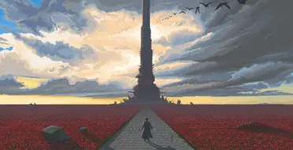

On this website you will also find...
Reviews
Please check out the reviews of people who have read or are reading the books, you will get a better sense of wheter if it's something you like or not.
Go to reviews
In the story, Roland is the last living member of a knightly order known as gunslingers and the last of the line of Arthur Eld, much like our King Arthur. The world he lives in is quite different from our own, yet bears many similarities to it. Politically organized along the lines of a feudal society, it shares technological and social characteristics with the American Old West, but also incorporates elements of magic. While the technology of the Old Ones is largely gone from Mid-World, there are still some relics from that highly advanced society. Roland's quest is to find and protect the Dark Tower, a fabled building said to be the nexus of all universes. Roland's world is said to have "moved on". Roland's nation of Gilead has been destroyed. Time, itself, does not flow in an orderly fashion; clocks have long since been rendered useless. Even the Sun sometimes rises in the north and sets in the east.
Please check out the reviews of people who have read or are reading the books, you will get a better sense of wheter if it's something you like or not.
Go to reviews
Comments
You can check out some comments people who have or have not read the books, you can comment too!
Go to comments